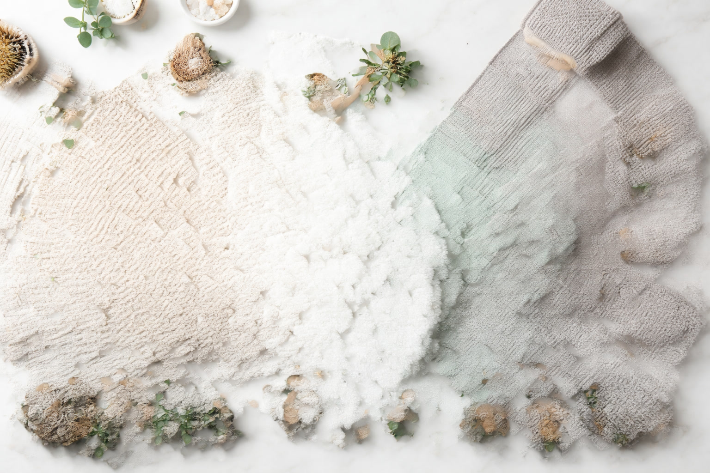

Bath Towel Buying Guide: Materials, Sizes & GSM Explained

Product Researcher & Home Textiles Expert

Quick Answer
For most buyers, we recommend a Turkish cotton towel in the 600-700 GSM range. It offers the best balance of softness, absorbency, quick drying, and long-term durability. For specific product recommendations, see our Best Bath Towels of 2026 roundup.
Table of Contents
Buying bath towels seems straightforward — until you encounter terms like "GSM," "ring-spun," "zero-twist," and "combed cotton." This guide cuts through the marketing jargon and gives you the practical knowledge to choose the right towels for your needs and budget.
Whether you're outfitting a new home, upgrading from worn-out towels, or buying for a specific purpose (gym, guest bathroom, luxury master bath), the same fundamental principles apply. Understanding just three things — material, GSM, and weave — will make you a smarter towel shopper than 95% of buyers.
Understanding GSM (The Most Important Number)
GSM stands for Grams Per Square Meter — it measures the density and weight of the towel fabric. It's the single most useful number for predicting how a towel will feel and perform.
GSM Ranges Explained
| GSM Range | Weight Class | Feel | Best For | Dry Time |
|---|---|---|---|---|
| 200-300 | Ultra-Light | Thin, almost sheer | Kitchen towels, cleaning | Very fast |
| 300-400 | Lightweight | Light, compact | Gym, travel, beach | Fast (1-2 hrs) |
| 400-600 | Medium | Balanced, everyday comfort | Daily bathroom use | Moderate (3-4 hrs) |
| 600-800 | Heavy | Plush, hotel-quality | Master bath, luxury | Slow (4-6 hrs) |
| 800-900+ | Ultra-Heavy | Maximum plushness | Spa, premium luxury | Very slow (6-8 hrs) |
Our Recommendation: For most households, 500-700 GSM is the sweet spot. You get noticeable softness and absorbency without the long drying times of heavier towels. If you use a tumble dryer, you can comfortably go up to 800 GSM.
The GSM-Drying Trade-off
Higher GSM always means slower drying. This is the fundamental trade-off in bath towels, and there's no way around it. A denser towel holds more water, which means more time to evaporate.
If you air-dry your towels, stay below 600 GSM to avoid the musty smell that develops when towels stay damp too long. If you use a tumble dryer, GSM matters less for drying — but higher GSM towels will use more energy to dry.
Cotton Types Compared
Not all cotton is created equal. The type of cotton determines how soft, durable, and absorbent your towels will be — and how they'll age over time.
Turkish Cotton
Grown in Turkey's Aegean region, Turkish cotton has extra-long fibers that produce towels with a unique advantage: they get softer with every wash. Turkish cotton also dries faster than other premium cottons, making it the most practical luxury option.
- Softness: Starts good, becomes great over time
- Absorbency: High
- Drying Speed: Fast for a premium towel
- Durability: Excellent (3-5 years)
- Price: $15-40 per towel
See our dedicated Best Turkish Cotton Bath Towels roundup for top picks.
Egyptian Cotton
The luxury standard. Egyptian cotton has the longest fibers of any cotton variety, creating the softest, most absorbent towels available. The trade-off is weight and drying time — Egyptian cotton towels are noticeably heavier and slower to dry.
- Softness: Maximum from day one
- Absorbency: Highest of all cotton types
- Drying Speed: Slow
- Durability: Very good (3-5 years)
- Price: $25-50+ per towel
Supima Cotton
American-grown long-staple cotton (only 1% of US cotton qualifies). Supima offers a middle ground between Turkish and Egyptian — excellent softness with good durability. Most commonly found in premium waffle-weave towels.
- Softness: Very high
- Absorbency: High
- Drying Speed: Moderate
- Durability: Excellent
- Price: $30-50 per towel
Regular Cotton / Ring-Spun Cotton
Standard cotton towels are affordable and functional. Ring-spun cotton is regular cotton that's been twisted into a finer, stronger yarn — a meaningful upgrade that costs only slightly more.
- Softness: Moderate (may stiffen with washing)
- Absorbency: Good
- Drying Speed: Moderate
- Durability: Good with ring-spun, fair with standard
- Price: $5-15 per towel
Bamboo / Bamboo-Cotton Blends
Bamboo fiber towels are naturally antimicrobial, silky-soft, and eco-friendly. Pure bamboo towels are rare; most are blends (60% bamboo / 40% cotton). They're excellent for people with sensitive skin or allergies.
- Softness: Very high (silky texture)
- Absorbency: Very high
- Drying Speed: Fast (bamboo fibers release moisture quickly)
- Durability: Moderate (bamboo fibers are delicate)
- Price: $15-35 per towel
Microfiber
Synthetic (polyester/polyamide) towels that are ultra-lightweight, compact, and incredibly fast-drying. Great for travel and gym — not ideal for everyday bathroom use due to the synthetic feel.
- Softness: Different texture (smooth, not fluffy)
- Absorbency: High for its weight
- Drying Speed: Fastest of all materials
- Durability: Good
- Price: $5-15 per towel
Material Comparison at a Glance
| Material | Softness | Absorbency | Dry Speed | Lifespan | Price/Towel |
|---|---|---|---|---|---|
| Turkish Cotton | Improves | High | Fast | 3-5 yrs | $15-40 |
| Egyptian Cotton | Maximum | Highest | Slow | 3-5 yrs | $25-50+ |
| Supima Cotton | Very High | High | Moderate | 3-5 yrs | $30-50 |
| Ring-Spun Cotton | Moderate | Good | Moderate | 1-3 yrs | $5-15 |
| Bamboo Blend | Very High | Very High | Fast | 2-3 yrs | $15-35 |
| Microfiber | Different | High | Fastest | 2-4 yrs | $5-15 |
Weave Patterns Explained
The weave pattern determines the texture, absorbency, and drying behavior of a towel. Even the same cotton can feel completely different depending on how it's woven.
Terry Cloth (Loop Pile)
The classic towel weave — tiny loops of thread that create a soft, fluffy surface. Terry cloth is the most common and versatile towel weave, and what most people picture when they think "bath towel."
Best for: Everyday bathroom use. The loops trap water effectively, making terry the most absorbent weave type.
Waffle Weave
A textured honeycomb pattern that creates small pockets in the fabric. Waffle weave towels are lighter, dry much faster, and take up less storage space than terry towels.
Best for: Humid climates, small bathrooms, and people who hate waiting for towels to dry. Also popular for kitchen use.
Zero-Twist
Instead of twisting cotton fibers into yarn, zero-twist towels use a soluble support fiber (usually PVA) that dissolves in the first wash, leaving untwisted cotton loops. The result is maximum softness — but at the cost of durability.
Best for: People who prioritize cloud-like softness over longevity. Great for sensitive skin.
Velour
Terry cloth with the loops sheared off on one side, creating a smooth, velvety surface. Velour looks elegant but is less absorbent than regular terry because the cut loops can't trap water as effectively.
Best for: Decorative towels and beach towels (the smooth surface is better for lying on). Not recommended as your primary bath towel.
Flat Weave (Peshtemal)
A thin, flat cotton weave with no loops. Traditional in Turkish hammams. Extremely lightweight, fast-drying, and gets softer with use. More of a wrap than a traditional towel.
Best for: Travel, beach, gym, and as a stylish alternative for people who prefer lightweight towels.
Towel Sizes Guide
| Type | Typical Size | Use |
|---|---|---|
| Washcloth | 13x13" | Face washing, makeup removal |
| Hand Towel | 16x28" to 18x30" | Drying hands at sink |
| Bath Towel | 27x52" to 30x56" | Standard post-shower drying |
| Bath Sheet | 35x60" to 40x70" | Full-body wrap, luxury feel |
| Beach Towel | 30x60" to 40x72" | Beach, pool, outdoor use |
Size Tip: If you're average height or taller, consider bath sheets (35x60"+) over standard bath towels. The extra coverage feels significantly more luxurious and is worth the small price premium.
Budget Planning
How much should you spend on bath towels? Here's a realistic breakdown:
Budget Tier: $5-15 per towel
Standard cotton or ring-spun cotton. Perfectly functional for 1-2 years. Best for: rentals, kids' bathrooms, gym bags, and anyone who replaces towels annually.
Our pick: Amazon Basics 6-Pack ($39.99)
Mid-Range Tier: $15-35 per towel
Turkish cotton, bamboo blends, or quality ring-spun. Noticeably softer and more durable (2-3 years). The sweet spot for most households.
Our pick: Hammam Linen Turkish Cotton ($34.99/2)
Premium Tier: $35-50+ per towel
Long-staple Turkish cotton, Egyptian cotton, or Supima cotton. Hotel-quality feel with 3-5 year lifespan. The cost-per-use often matches mid-range due to longevity.
Our pick: Brooklinen Super-Plush ($69.99/2)
How Many Towels Do You Need?
The standard rule: 3 bath towels per person (one in use, one in the laundry, one spare). Add 2-4 guest towels. Here's a quick calculator:
- 1 person: 3 bath towels + 2 guest = 5 total
- 2 people: 6 bath towels + 2 guest = 8 total
- Family of 4: 12 bath towels + 4 guest = 16 total
Cost-Per-Use Analysis
A $70 towel lasting 4 years (used twice weekly, washed weekly) costs about $0.07 per use. A $10 towel lasting 1 year costs about $0.10 per use. Premium towels often cost less per use than budget options.
Care & Maintenance Guide
Before First Use
Always wash new towels before using them. This removes manufacturing chemicals (sizing agents, dyes) and improves initial absorbency. Wash separately in cold water for the first wash, especially with dark colors.
Regular Washing Best Practices
- Water temperature: Warm water (40°C/105°F) for regular washes. Hot water for white towels and sanitizing
- Detergent: Use half the recommended amount. Excess detergent builds up in fibers, causing stiffness
- NO fabric softener: This is the most common mistake. Fabric softener coats cotton fibers with a waxy layer that reduces absorbency and prevents the natural softening process of Turkish cotton
- Vinegar rinse: Add 1/2 cup white vinegar to the rinse cycle every 3-4 washes to dissolve mineral buildup and restore softness
- Baking soda: Add 1/2 cup baking soda to the wash cycle to neutralize odors and brighten whites
- Load size: Don't overstuff the washer. Towels need room to agitate and rinse properly
Drying Tips
- Tumble dryer: Medium heat, never high. Remove promptly when done
- Air drying: Hang towels fully spread out — never bunched on a hook. Ensure good airflow
- Between uses: Always hang towels to dry completely between uses. A damp towel on a hook breeds bacteria and causes musty smells
Never: Use bleach on colored towels, iron bath towels (flattens loops permanently), or dry on high heat (damages cotton fibers).
When to Replace
Replace your bath towels when you notice:
- Persistent musty smell even after washing
- Significantly reduced absorbency
- Visible thinning, holes, or frayed edges
- Stiffness that doesn't improve with vinegar washes
- Color fading to the point of looking worn
For most towels, this is every 2-3 years. Premium Turkish and Egyptian cotton can last 4-5 years with proper care.
5 Common Mistakes to Avoid
1. Using Fabric Softener
This is the #1 towel mistake. Fabric softener deposits a waxy coating on fibers that makes them feel smooth in the short term but permanently reduces absorbency. Use white vinegar instead — it softens without coating.
2. Buying Based on In-Store Feel
New towels in stores are treated with sizing agents that make them feel artificially soft and smooth. This washes out after the first wash. Always check GSM, material type, and reviews rather than in-store touch.
3. Choosing Style Over Function
Decorative towels (velour, printed, embellished) are less absorbent than plain terry cloth. Buy functional towels for daily use and decorative ones separately if you want them for display.
4. Ignoring GSM
A "premium cotton" towel at 400 GSM will feel thin and disappointing. A "basic cotton" towel at 600 GSM will feel more luxurious. GSM matters more than marketing labels.
5. Washing All Colors Together
New dark-colored towels will bleed dye for the first 3-5 washes. Always wash new colored towels separately (or with similar colors) to prevent staining your lighter towels.
Frequently Asked Questions
What is the best GSM for everyday bath towels?
500-700 GSM is the sweet spot for everyday bath towels. It provides good absorbency and softness while still drying reasonably fast. Below 400 GSM feels thin; above 800 GSM is luxurious but slow to dry.
What's the difference between a bath towel and a bath sheet?
A standard bath towel is typically 27x52 to 30x56 inches. A bath sheet is 35x60 inches or larger, providing full-body wrap coverage. Bath sheets feel more luxurious but cost more and take longer to dry.
Is Egyptian cotton better than Turkish cotton for towels?
Neither is universally better — they excel at different things. Egyptian cotton is denser and more absorbent (great for luxury). Turkish cotton dries faster and gets softer with washing (great for daily use). Most people prefer Turkish cotton for its practicality.
Why do my towels feel stiff after washing?
Stiff towels are usually caused by: excess detergent buildup, fabric softener residue (yes, softener makes towels worse), hard water mineral deposits, or over-drying. Fix: use half the detergent, skip softener, add vinegar to rinse cycle, and tumble dry on medium heat.
How many bath towels does a household need?
A good rule: 3 bath towels per person (one in use, one in the laundry, one spare). A 2-person household needs 6 bath towels minimum. Add 2-4 extra for guests. For hand towels, double that number.
Ready to Buy?
Now that you know what to look for, check our curated product roundups:
Last updated: March 28, 2026. This guide is maintained by our editorial team and updated as new products and materials become available.